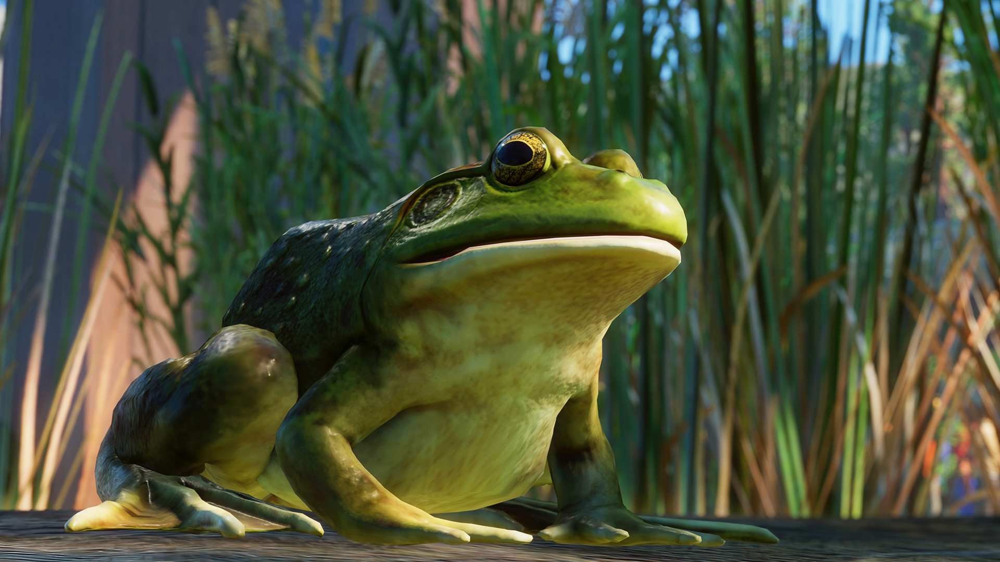
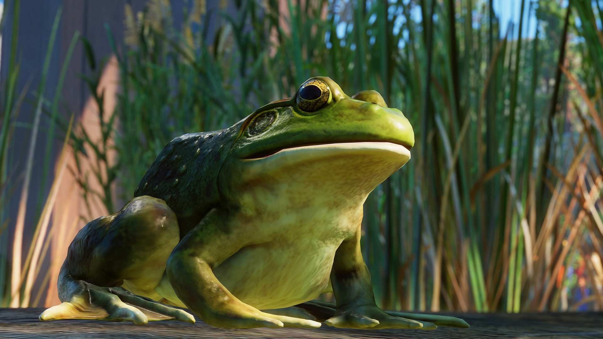

North America Animal Pack
Data wydania: 4 października 2021
Cena pakietu: 35.99 zł
Oficjalny zwiastun DLC North America Animal Pack
Powitaj w swoim zoo osiem wyjątkowych nowych gatunków z Pakietu zwierząt Ameryki Północnej! W Pakiecie zwierząt Ameryki Północnej znajdziesz wspaniałe okazy dodane na życzenie członków naszej społeczności — mruczące, pływające i galopujące
zwierzęta, a do tego pięć nowych urozmaiceń, dzięki którym nowi mieszkańcy poczują się w Twoim zoo jak w domu. Pakiet zwierząt Ameryki Północnej obejmuje również nowy scenariusz z limitem czasu, w którym sprawdzisz swoje umiejętności,
zarządzając ogrodem zoologicznym u podnóża słynnego Pasma Błękitnego.
Galeria zdjęć


 


O tym DLC
W Pakiecie zwierząt Ameryki Północnej znajdziesz łosia, pumę, uszankę kalifornijską, bobra kanadyjskiego, aligatora amerykańskiego, nieświszczuka czarnoogonowego, lisa polarnego oraz żabę ryczącą. Siedem z tych zwierząt to zwierzęta z wybiegów, a jedno to zwierzę z ekspozycji. Od imponującego wzrostem łosia, który jest największym i najcięższym z gatunków jeleniowatych w Planet Zoo, po maleńkiego nieświszczuka — oczarujesz odwiedzających okazami fascynującej fauny Ameryki Północnej.
Goście będą zachwyceni, obserwując interesujące zachowania każdego z nowych zwierząt. Przykładem może być lis polarny, który wykazuje największą odporność na niskie temperatury spośród zwierząt dostępnych w grze i poluje w uroczy sposób, nurkując w śniegu, zupełnie jak w warunkach naturalnych. Uszanki kalifornijskie nawołują się charakterystycznymi szczeknięciami i potrząsają mięsistymi fałdami ciała. Z kolei drobne nieświszczuki — najmniejsze spośród dorosłych okazów zwierząt w grze Planet Zoo — stają na tylnych łapkach w pozie wartownika, po czym wydają okrzyk i podskakują.
Ścieżka dźwiękowa
Oryginalna ścieżka dźwiękowa złożona z 4 wyjątkowych utworów. Możesz słuchać tej wspaniałej muzyki, kiedy tylko zechcesz.
Posłuchaj North America Animal Pack
Rozegraj po mistrzowsku nowy scenariusz z limitem czasu
Witaj w Rezerwacie przyrody Jameson! Nowo powstała atrakcja usytuowana wśród jezior u podnóża słynnego Pasma Błękitnego zaprasza Cię do objęcia funkcji zarządcy. Zajmiesz się rozbudową zoo, oczyszczając teren, aby wkomponować nowe wybiegi w otaczający krajobraz, omijając przy tym błotniste tereny podmokłe. Uwolnisz kreatywność, budując zwierzętom obszerne, wzorowane na środowisku naturalnym wybiegi, w których będą się prawidłowo rozwijać.
Oprócz zarządzania planowaniem i budową, Twoim celem będzie zwiększanie różnorodności gatunków poprzez wprowadzanie do zoo okazów z Pakietu zwierząt Ameryki Północnej. Pomóż tym zwierzętom zadomowić się w pieczołowicie dopracowanych wybiegach, udostępnij gościom informacje na temat potrzeb tych gatunków i opracuj skuteczne programy hodowlane, aby zapewnić swojemu zoo sukces w przyszłości.